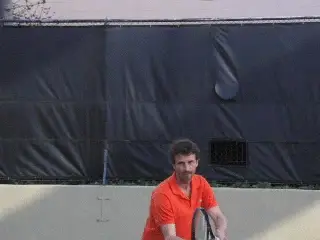
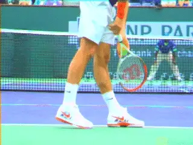
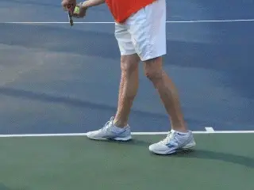
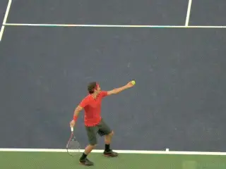
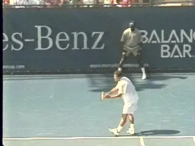

Three Keys to the Kick¶
Three Keys to the Kick
Jeff Salzenstein
In this article I want to discuss three important factors in developing a kick serve, factors that aren't always well understood. The first is stance. The second related factor is body turn. The third is the X factor. This is the intersecting double arc created by the path of the toss and the path of the swing.

Certain factors in developing a great kick serve aren't widely understood.
Stance
Which stance is better to develop an amazing kick serve? There is no doubt you can develop a good or even a great kick serve with a pinpoint stance as long as a lot of the elements are correct. (link for Chris Lewit's series on the kick based on the Pinpoint.)
[But I believe the platform is better.] Why? I believe [players with pinpoint stances tend to open their bodies too early. This can cause you to come across the ball too much with the racket and hit too much slice.]
The platform stance on the other hand keeps the rear leg in place. It also allows you to turn your shoulders away from the ball further than with the pinpoint.
This means more overall body rotation and also that you are more sideways at contact. I believe this makes it easier to control the timing of the body rotation and create the correct upward racket path.

I believe the platform model is superior for the kick--based in part on my own experience.
This includes [a better racket angle at contact with the [racket tip angled to the left.] That angle is critical in generating topspin.]
I can say this based on personal experience. Having served with a pinpoint for my entire junior and college career, I decided to make a change.
I studied high speed footage of Pete Sampras filmed by John Yandell. Then I worked with John directly.
Although John was hesitant about the timing we changed my serve to a platform on the Sampras model the day after my first round match in a Challenger in Aptos, California. I went on to win that tournament, and the benefits from that change were a key part of my run to the ATP top 100.
In setting up the stance, the front foot should start parallel to the baseline or close. The width of the stance should be about shoulder width. The back foot can be slightly turned back.
These factors vary among top players and every player should experiment though to find out the exact stance width and footwork angle is most comfortable and effective.
Shoulder Turn
One thing I love about teaching the kick with a platform stance is that it allows you to develop more body turn in all your serves. I believe the shoulders should turn away from the ball as the motion starts.

The platform: simpler, more body turn, better shoulder alignment at contact.
[It's also important to note that the [head should stay forward] as the shoulders turn.] Again, the exact amount of turn will vary by player and ability.
Why so much emphasis on the turn?
[A big shoulder turn means you can swing up and across the ball.] A smaller turn means you will tend to swing around too soon and too far with both your shoulders and your racket.
If you turn your shoulders less, you can still hit a great slice serve. But you can't hit a great flat serve and you can't hit a great kick.
Some people like to delay the shoulder turn but I like players to start the turn with the first move. This is the way Pete Sampras did it, a player who had one of the greatest kicks of all time. The same is true for Roger Federer.
X Marks the Spot
One of the biggest problems I see players have with their kick serves is the toss. Many players tend to toss the ball straight up in the air.
But for a kick serve the ball needs to arc. For a right hander that means it arcs or curves from your right to your left.
The racket is also arcing but in the opposite direction from left to right. The intersection of those two arcs is the contact.
Think of it as an \"X\". X marks the spot of the intersection of the arcs of the toss and the swing.
Note that the ball has to drop to create the downward arc in the toss. If it doesn't drop or stays too much to the right to begin with, it will affect the racket path and make the arc of the racket to the contact too flat and not enough upward.

The arc of the toss intersects the arc of the swing.
The swing has to be steep. A good image to facilitate is visualizing that your racket is combing the back of your head. This will keep the racket head moving up, give you the feeling of brushing the back of the ball, and keep it from moving too far around the ball.
You don't want to actually hit the back of your head of course. And the racket doesn't actually come that close. But the image helps many players steepen the upward swing.
Another way to get the feel for the double arc is to exaggerate it. To do this you can toss more radically to your left and actually make contact to the left of the body.
The more the ball is to your left the more you will have to hit up. This more extreme toss can help. But as your kick develops, you should work to move the contact back so that it's over the head.
Why? In addition to putting pressure on the shoulder, the extreme contact point reduces speed and telegraphs the serve that is coming.
For advanced players, the closer you come to hitting all your serve variations off the same toss the better. Pete Sampras and Roger Federer are masters of keeping those toss variations to a minimum.
Another factor in developing the kick is visualizing the shape of the shot. On a kick serve you have to visualize hitting the ball on an arc over the net.
The more vivid you can make your image the better. The one I like the best I call creating rainbows. A pretty image of colors arcing over the net.

Changing where you stand can help you develop a feel for the kick.
[To do develop the right arc[, you initially need to slow the pace down]] and [focus on the ball path. Think about the ball arcing 2 or 3 feet over the net.] See this image in your mind's eye before you hit.
Position
Changing where you stand on the baseline can really help you develop a feel for hitting the kick.
To master hitting a kick serve down the T in the deuce court, move closer to the center line. Now the ball travels in a straighter line and you will be less likely to curve into the center of the court or the forehand side.
Similarly, standing out wider in the ad court will help you find the back corner of the service box and kick more radically to the side. You probably want to find one serving position eventually in each court, but sometimes it can still pay to vary it.
Pete Sampras used to stand at the edge of the singles court when he felt the returner couldn't handle his kick serve to the backhand. Stay with it and maybe your kick will end up being the same kind of weapon!
|  | training program on the web for players of all |
| levels. Jeff was an elite American junior player | |
| who went on to become a two time All American at | |
| Stanford. Over the course of his pro career he | |
| won 5 Challenger titles, played in the main draw | |
| at all four Grand Slams, and was ranked in the | |
| top 100 on the ATP Tour. He has career wins over | |
| players including Fernando Verdasco, Mikhael | |
| Tillstrom, Jiri Novak, and Greg Rusedski. | |
| To Visit Jeff at Tennis Evolution and Learn More | |
| About His Coaching and Training, [Click | |
| Here!](http://www.tennisevolution.com) |